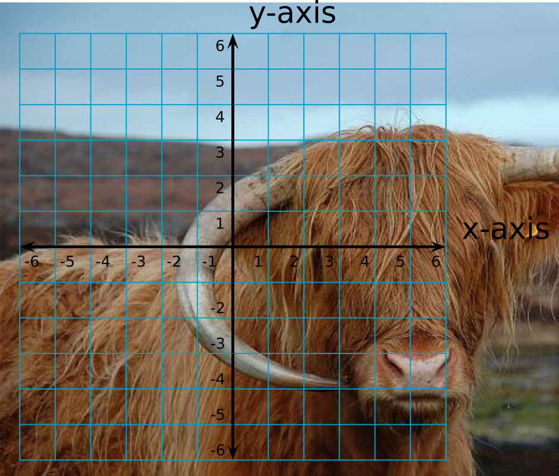
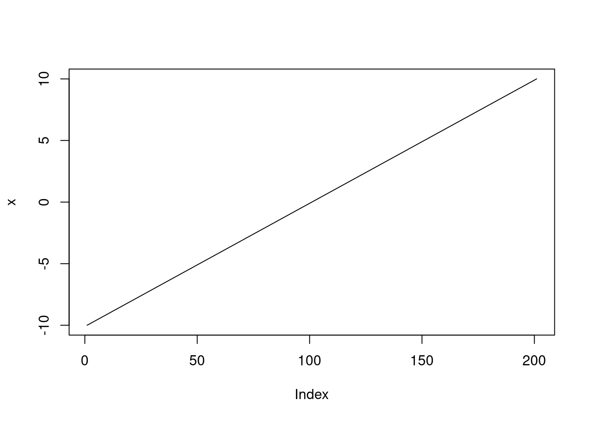
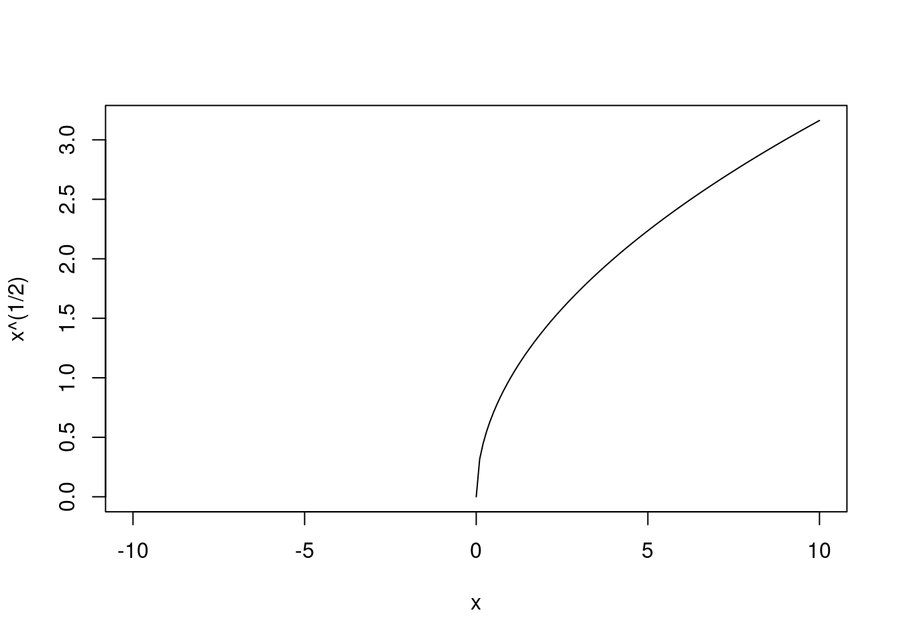
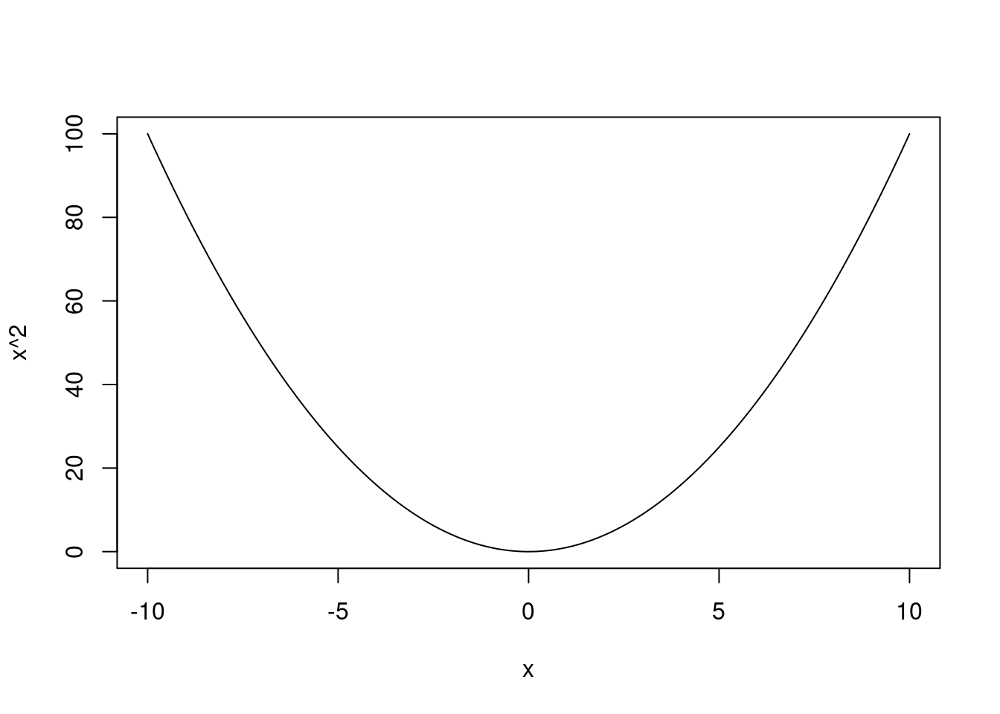
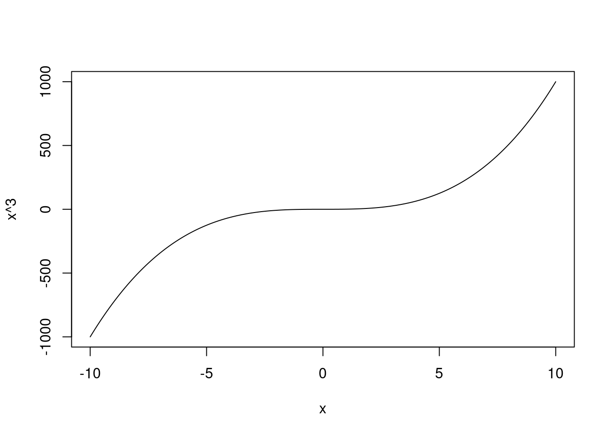
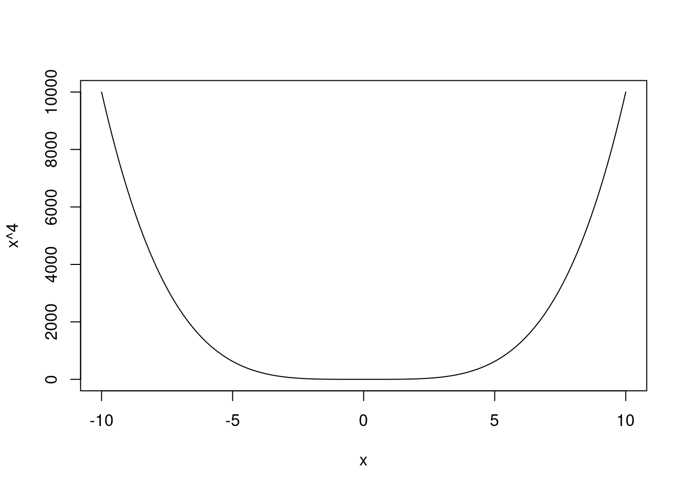
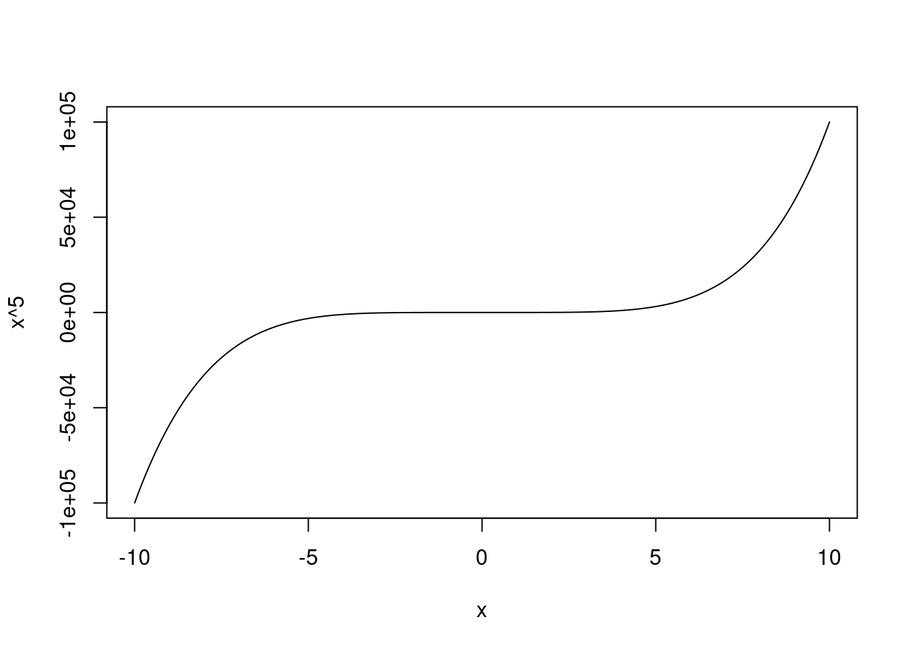
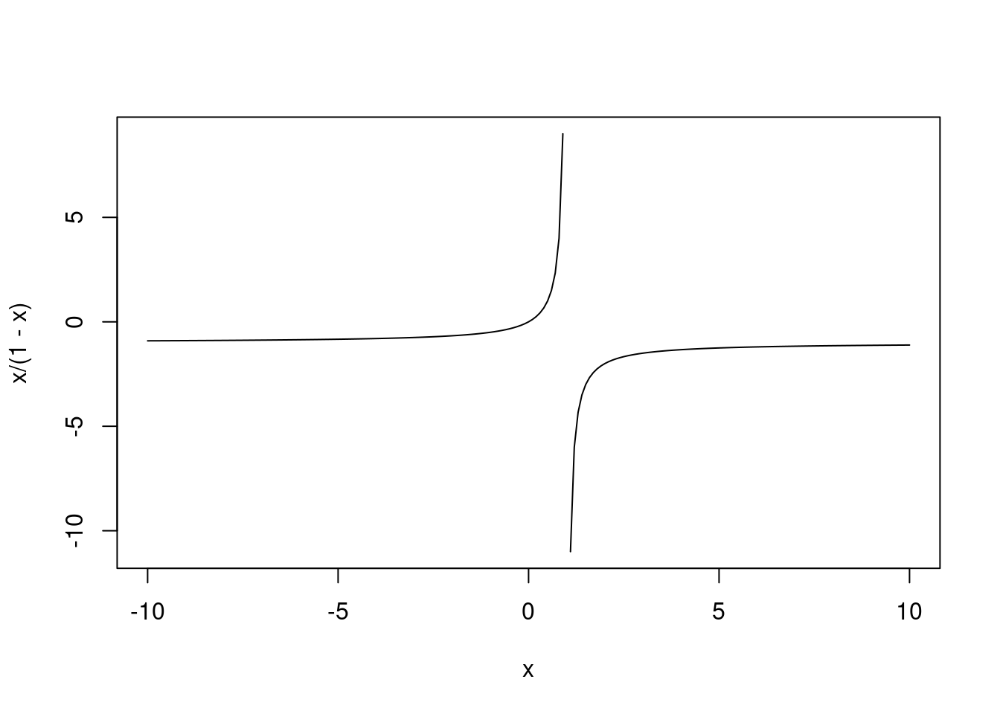
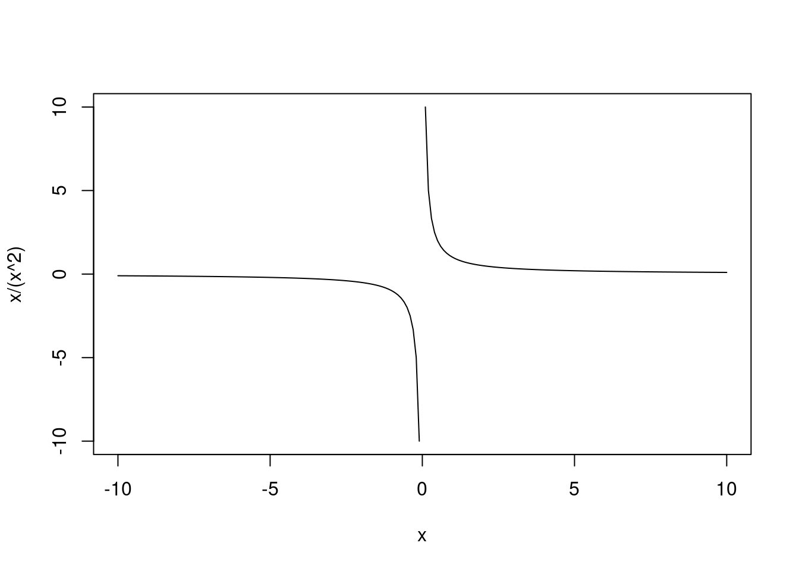
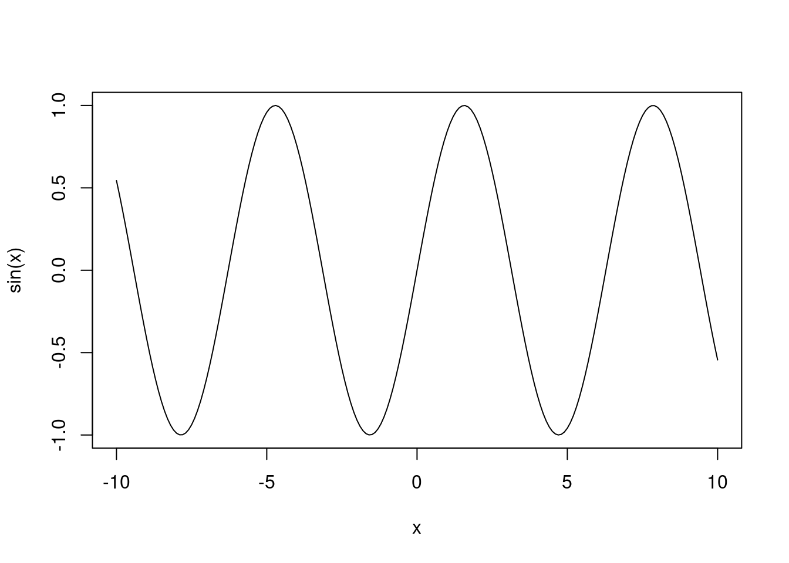

Linear models are the bread and butter of ecological modeling because we can modify them in many, many different ways to answer all sorts of questions; this is why we are going to spend the next several weeks on linear models. This week, we are going to mainly focus on understanding the assumptions of linear models before we move on to how to actually build, fit, and interpret models.
All models have assumptions. These are conditions that should be met by your model in order for you to trust the inference you make based on it. If these assumptions are not met, take your model outputs with a grain of salt (or don’t believe them, depending on how badly you don’t meet the assumptions!).
For linear models, there are six assumptions, described below. Today, we are only talking about the first three assumptions related to effects: they make biological sense, the effects are additive, and the effects are linear. We will talk about errors on Thursday when we talk about stochasticity.
It makes biological sense. This is the single most important assumption of any model. You must ask yourself, as the modeler, if your hypotheses and predictions make biological sense, and if then your model (which stems from those predictions) also makes sense. The only way to check this assumption is through your own expertise as a biologist, and typically as the subject expert for what you’re studying. Does it make sense, for example, to model growing degree days as a function of moth phenology? Why or why not? What about modeling species richness as a function of nutrient concentration? What about nutrient concentration as a function of species richness? What biological scenarios might we be talking about in these different scenarios?
The effects are additive. We will talk about this today.
The effects are linear. This does not mean that everything needs to be a straight line! That would be rectilinear. But, they do need to be linear in the algebraic sense of the word.
Errors are independent. There are no shared patterns in the residuals, which might indicate that there is an issue with the observation process, or that there are other shared covariates that might explain patterns in the residuals. More on Thursday!
Errors have equal variance (“homoscedasticity”).
Errors are normally distributed. The residuals of the model are not skewed, non-normal, all positive, etc.
The assumptions of additivity and linearity both have to do with the deterministic portion of a linear model. We will talk more about the components of linear models next week. For now, know that they are both to do with the effects in the model, i.e., what is the effect of one (or more) variables on your response variable.
5.2 Algebra reminders
There are a few important things to remember from your first algebra class that will be important for linear models.
Typically, we represent the relationship between \(x\) and \(y\) in a Cartesian plane, where the \(x\) axis is horizontal and the \(y\) axis is vertical (and we are only operating in two dimensions). The \(x\) axis is for our predictor variable(s), and the \(y\) axis is for our response variable.
Note on terminology. Some people refer to variable(s) on the x-axis as the independent variable and the variable on the y-axis as the dependent variable because y depends on x. This is confusing, however, and also implies that there is a strongly causal relationship between x and y. I, and many others, prefer the terms predictor for the x-axis variable(s), and response for the y-axis variable because these terms are much clearer for communicating your model structure.
In a function, no single \(x\) value as input can have two different \(y\) values as output. In other words, a function can never double back on itself / overlap vertically. If you know \(x\), you know \(y\) - there is no possibility of a different \(y\) associated with a single \(y\). The same \(y\) value can be the output of multiple different \(x\) input values, though.
Functional cows

Non-functional cow, input of x = 1 leads to y = 1.5 and y = -4
Normal linear functions are continuous with no break points / gaps. There are piecewise functions over which there are ranges of \(x\) values that there can be no \(y\) values, but these are not the norm. For this class, we are only going to use normal linear functions that are not piece-wise. If you’re interested in piece-wise type questions, you might also be interested in hurdle models.
An effect is linear if it is linear in the algebraic sense, meaning it is a continuous line (not piecewise) and only one value of \(y\) is expected for any value of \(x\). It does not mean it has to go in a straight line (i.e., rectilinear).
# Let's explore some linear functionsx <-seq(-10, 10, by=0.1)plot(x ~ x, type="l")
Warning in plot.formula(x ~ x, type = "l"): the formula 'x ~ x' is treated as
'x ~ 1'

plot(x^(1/2) ~ x, type="l")

plot(x^2~x, type="l")

plot(x^3~ x, type="l")

plot(x^4~ x, type="l")

plot(x^5~ x, type="l")

plot(x/(1-x) ~ x, type="l")

plot(x/(x^2) ~ x, type="l")

plot(sin(x) ~ x, type="l")

5.3 A super simple linear model
Remember that we can represent a straight line in slope-intercept form as \(y = mx + b\), where \(m\) is the slope of the line and \(b\) is the intercept. The intercept, \(b\) is where the line hits the y-axis, in other words, it is the value of \(y\) when \(x=0\). For every one unit increase in \(x\), we expect an \(m\) unit increase in \(y\).
For now, let’s assume that \(b=0\) so we can ignore the intercept term (kinda). If we said that \(m = 1.2\), what are all possible values of \(y\) when \(x = 4\)? How many possible values can there be? Just one, because y is a linear function of x. What about when \(x = 5\)? \(x=7.2\)? The value of \(m\) can be thought of not just as the slope, but as the effect of \(x\) on \(y\), meaning how the expected value of \(y\) changes with changes in \(x\).
Now, if we bring back \(b\) to the equation, and set it’s value to 3 so we have an intercept term that is non-zero. What is the value of \(y\) when \(x = 2\) now? What about \(x=3\)? What does \(b\) represent as it relates to \(x\)? It is the expected value of \(y\) when \(x\) is 0. This is going to be super duper important later on.
5.4 Hotrod ants
As a motivating example, let’s consider hotrod ants. They live in deserts, and if they get too hot, they die. They hold themselves up high enough to be 10 degrees cooler than the surface of the desert they are standing on. Let’s also assume that the thermal melanism hypothesis applies here, and darker ants get hotter faster and hold more heat than lighter ants, and we will assume there is some intraspecific variation in ant color where some are darker than others. Also, if they stop, they die, so we assume that if they stop, they lie down and take a little nap on the surface, which is when the extra 10 degrees kicks in.
If our response variable is ant body temperature, we can predict this based on whether they are taking a nap or not, and their body color. Let’s also assume the desert surface is always 70 degrees, and since they are ten degrees cooler, they are 60 degrees when they are not on the surface of the desert. If they are on the surface, then we add 10 degrees. For every 1 lumens darker they get, they are 0.01 degrees hotter.
How would we describe this example in terms of \(y = mx + b\)? What could we do to make our lives easier when it comes to interpreting the intercept?
What is the expected body temperature of an ant that is not napping and is 50 lumens? What about an ant that is napping and is 45 lumens? What if we calculated it again?
One of the cool things about antlions is that, because they have little conical pits, the sand is a bit cooler there and it serves as a microclimate refugia. So now we could ask what is the additional effect of being currently in a pit (and about to die) on hotrod ant temperature? Let’s assume this sand is about 4 degrees cooler than the surrounding sand. How would we write this example in terms of \(y = mx + b\)? Because the effects are additive, we can just keep slapping more \(x\) variables in, so now we’ve got something like \(y = m1x1 + m2x2 + b\). How does this change our interpretation of the intercept? What does it now mean to say \(x\) is 0? Both \(x1\) and \(x2\) are zero. This is where centering can be really helpful, because we can then interpret the intercept as the expected value for the average ant that is not at a pit and not lying down and then everything else is in reference to that value.
Effects can also be additive, meaning that you can have multiple predictor variables, and their associated effects, and if you add those effects together you get a single predicted variable for \(y\).
Let’s simulate a dataset of 980 ants with different body colors in various locations doing various activities like napping or not. Let’s assume the average ant is 50 lumens, with a standard deviation of 10, and that about 20% of ants decide to take a nap, and 40% have accidentally wanted into an antlion pit. All those things are independent of each other. Ants are not more or less likely to nap in a pit, and darker ants are not more or less likely to do either of those things.
Given our simulated dataset, let’s set up some parameters containing the effects of the color, nap status, and being in a pit on ant heat. We can then multiply these values by our simulated cats to get their predicted temperature values.
To help with understanding linear models, it is important to know just a little bit of matrix algebra. Our effects (or ‘betas’ for short) are a vector, which has only one dimension and all elements are of the same type (typically, numeric).
A matrix, while still having elements of the same type, has two dimensions: the number of rows, and the number of columns. In ecological modeling, people typically either describe a matrix as being \(n \times p\), where \(n\) is the number of rows or number of observations and \(p\) is the number of predictors, or as being \(i \times j\) where \(i\) is the number of observations and \(j\) is the number of predictors. I tend to use \(i \times j\) because it matches how I code indices (i.e. x[i]) and because very rarely are biological concepts denoted as \(i\) or \(j\) but \(n\) often is used to describe sample sizes and \(p\) is often used for probability, so I find the code is much more readable with \(i\) and \(j\).
5.5.1 Adding matrices
Let’s say we have the following 2x3 matrices \(A\) and \(B\). To add the two matrices together, we add the matching elements from each. We can only add the matrices together if they have the same dimensionality, i.e. we could not add a 2x3 matrix to a 2x5 matrix because there will not be matching elements.
# create matrix AA <-matrix(data=c(2, 4, 3, 1, 6, 8), nrow=2, ncol=3,byrow=T # super important! default is to fill by column )B <-matrix(data=c(1, 2, 3, 5, 8, 1),nrow=2, ncol=3, byrow=T)A+B
[,1] [,2] [,3]
[1,] 3 6 6
[2,] 6 14 9
# what if we mad matrices with different dimensions?C <-matrix(data=c(1, 0, 1, 1, 0, 1),nrow=3, ncol=2, # note we now have a 3x2 matrix!byrow=T )print(C)
[,1] [,2]
[1,] 1 0
[2,] 1 1
[3,] 0 1
#A+C # this will result in an error because they have different dimensions
5.5.2 Multiplying vectors and matrices
When multiplying matrices and vectors in R, we use the %*% operator, rather than *. When multiplying a vector by a matrix, the vector needs to have the same length as the number of columns in the matrix. One thing that is perhaps counterintuitive here is that vectors are oriented like columns so the length is vertical. But, when viewed in R, they will look horizontal.
This is where our Design Matrix comes in, where the number of columns needs to be equal to our number of betas, and the number of rows needs to be equal to the number of observations. Don’t forget to add a column of all 1s if you have an intercept! i.e. so that the intercept \(\beta_0\) gets multiplied by \(1\) and added in each time.
To go back to our ants, the formal way we would describe what we did to make our predictions is that we took a vector of effects (our ‘betas’) and multiplied them by our matrix of observations (i.e., our simulated cats).